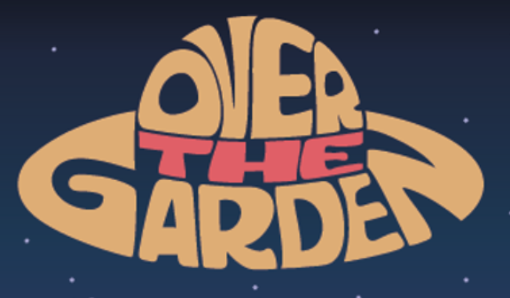

construct 3d · blueprint · beat'em up
Gameplay Programmer · Game Artist · Game Designer
Affrontez des légumes impitoyables sur un champ de bataille.
Plantez-les pour obtenir une récolte abondante et remporter la partie.

À compléter : présente tes intentions de design, la boucle de gameplay et les mécaniques principales (combat beat'em up, plantation/récolte, condition de victoire).
Game Design · À définir
À compléter.
Game Design · À définir
À compléter.
À compléter : détaille les systèmes que tu as programmés — combat, IA des légumes, plantation/récolte — l'architecture et les choix techniques.
Game Programming · À définir
À compléter.
Game Programming · À définir
À compléter.
À compléter : présente ta direction artistique — style visuel, personnages, décors, animations — et le pipeline de production des assets.
Game Art · À définir
À compléter.
Game Art · À définir
À compléter.